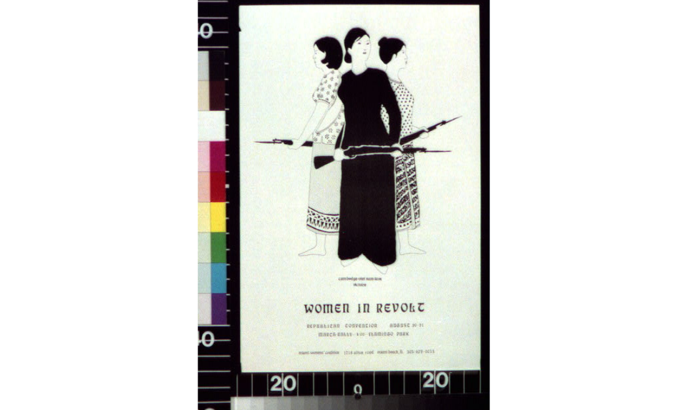

Present the poster and guide students through sourcing questions about creator, audience, purpose, message, and omission. Ask students to support each interpretation with a specific detail from the source.
Day 1 · About 12 Minutes
Read Between the Lines

CreatorWho created or sponsored the source?
AudienceWho was the source intended to reach?
PurposeWhat response or action might the creator want?
MessageWhat idea about the war is being communicated?
Language & ImageryWhich choices shape the viewer's interpretation?
OmissionsWhat perspective or information is not represented?
Add the poster to the Vietnam War Evidence Chart, record its perspective and purpose, and compare its message with the Johnson and Fulbright sources from the previous stage.
Students complete the statement: “The creator's purpose matters because...” Their response must explain how purpose affects what the source reveals about American responses to the war.
Source Analysis Prompt
How does knowing who created this poster and why it was created change the way you interpret its message?